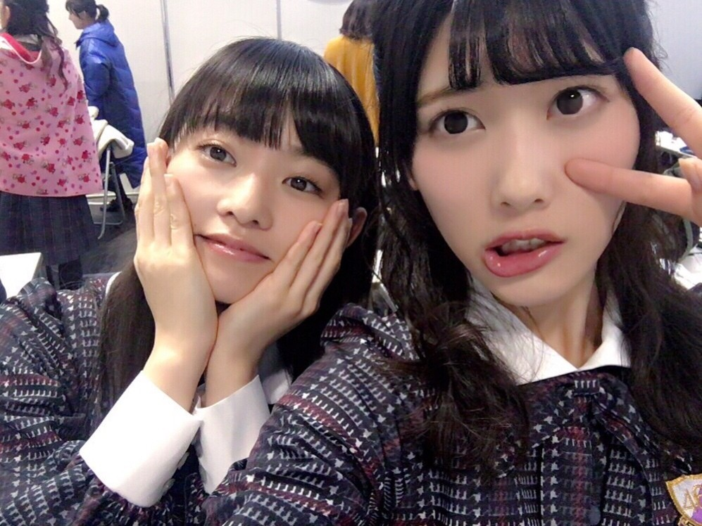
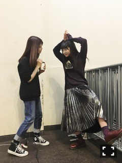
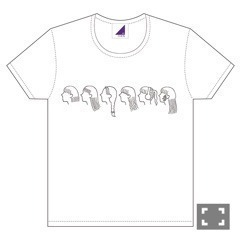
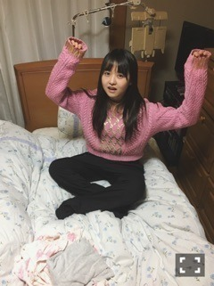

| 2017/01 20 Fri | 六変化。758回目 |

こないだの全握ペアは純奈と一緒でした！
ありがとうございました。

若よヽ(ﾟ､｡)ﾉ
トップスはbodysong.
胸元のペラペラワッペンが可愛い。
カーディガンも買いました。
今週の幕張メッセも
どうぞよろしくお願いします。
PlayStation®4
重力アクションアドベンチャー
『GRAVITY DAZE 2』
昨日の発売日に合わせて
WebCMのメイキングも公開されました。
重力変化装置と猫。壮絶！
なんだのこの創作のわくわく感は！
あの空間にいることを
噛み締めている充実した姿が映ってます。
ムービーの音楽もそうですが
ゲーム内で流れる音楽も超素敵なので
ミニライブの音源をずっと聴いてます。
#重力猫『GRAVITY CAT/重力的眩暈子猫編』
#重力猫『The Making of GRAVITY CAT - Behind the Scenes - 』
2月の生誕Tシャツ
今日から販売開始された〜

16歳〜21歳まで
それぞれ自分の中での
象徴的なあれを横顔で描いてみた。
生誕っぽいだろ！
販売期間は1/22(日)23:50まで


↑お正月、親戚の家の
おばあちゃんのベッドでくつろぐ
小さい頃異常なほど見てた
メリーポピンズを深夜に見た。
やっぱかわいー
メリーポピンズとサンダーバードと
一休さんが定番だったなあ
一休さんめっちゃ見てたなあ
まりか
コメント(680)
2017/01/20 20:55